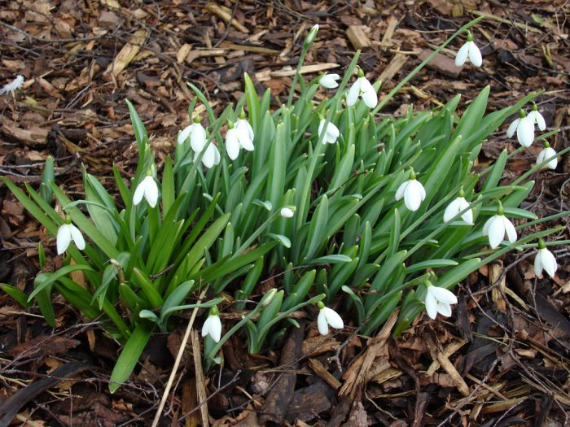

Таким рослинам не страшні морози, і показуються з-під землі вони вже в перший весняний місяць. Їх рекомендується садити в безпосередній близькості від чагарників, а також дерев. Варто пам'ятати, що цвітіння у них досить нетривалий, а після його закінчення частина знаходиться над землею відмирає.